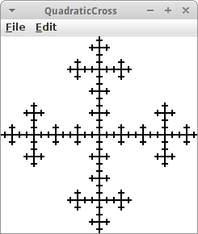

Recursion
Das Wort Rekusion kommt von dem lateinischen "recurrere" was "zurückkehren" bedeutet. Für uns heißt es soviel wie laufen wir mal los bis wir auf etwas stoßen, das wir schon kennen, und dann kehren wir zurück zu dem was wir vorher machen sollten. Rekursion ist eine weit verbreitete Technik zur Lösung aller möglichen Probleme. Im Vergleich zur Iteration, ist sie zwar häufig etwas langsamer, aber in der Regel viel eleganter. Fast alle Probleme lassen sich sowohl durch Iteration als auch durch Rekusion lösen.
.
 Palindrome
Palindrome
Ein sehr schönes Beispiel für Rekursion sind Palindrome [1]: also Worte oder Sätze die das Gleiche bedeuten, egal ob man sie von links nach rechts oder rechts nach links liest:
- rentner
- lagerregal
- racecar
- was it a car or a cat i saw
- Saippuakippokukkakivikakkukoppikauppias (Finisch für "Soap-bowl-flower-stone-cake-box seller") [2]
Man kann ein Palindrom folgendermaßen definieren:
- ein Wort das null oder einen Buchstaben lang ist, ist immer ein Palindrom;
- ein Wort ist dann ein Palindrom, wenn der erste und letzte Buchstabe gleich sind, und wenn das Wort ohne die beiden auch ein Palindrom ist.
Das ist das typische Muster für Rekursion: wir haben immer einen recursive case, hier Schritt 2, in dem wir das Problem durch eine einfachere Version von sich selbst ausdrücken, und einen base case, hier Schritt 1, der dafür sorgt, dass die Rekursion irgendwann aufhört, deswegen nennt man es auch die Abbruchbedingung. Denn die häufigste Bug bei rekursiven Programmen ist, dass sie nie aufhören, so wie beim Infinite Loop aus dem letzten Semester.
Natürlich wollen wir das gleich in Java umsetzen: wir wollen eine Methode namens isPalindrome(String s) schreiben, die feststellt ob ein gegebener String ein Palindrom ist:
private boolean isPalindrome(String s) { if (s.length() <= 1) { // base case return true; } else { // recursive case if (s.charAt(0) == s.charAt(s.length() - 1)) { return isPalindrome(s.substring(1, s.length() - 1)); } else { return false; } } }
Übrigens gibt es Palindrome auch in der Musik, und interessanterweise auch in unserer DNA: anscheinend speichert unserer Immunsystem die RNA von Viren sowohl vorwärts als auch rückwärts um böse Viren zu erkennen.
.
Factorial
Kommen wir zu einem anderen Klassiker der sich sehr schön mittels Rekursion lösen lässt, die Fakultät einer Zahl. In der Schule haben wir gelernt, dass man die Fakultät von vier wie folgt berechnet:
4! = 4 * 3 * 2 * 1
Wenn wir das als Programm schreiben wollen, dann bietet sich eine Schleife an:
int fac = 1;
for (int i=1; i<=4) {
fac = fac * i;
}
Das ist die iterative Art und Weise die Fakultät einer Zahl zu berechnen. Es gibt aber noch eine andere, die rekursive. Dazu beobachten wir, dass:
4! = 4 * 3 * 2 * 1 = 4 * 3!
Wir können also 4! durch vier mal 3! ausdrücken. Im Allgemeinen gilt sogar
n! = n * (n-1)!
Immer wenn wir eine derartige Beziehung finden, also dass eine Funktion in f(n) durch eine Funktion in f(n-1) ausgedrückt werden kann, dann haben wir eine rekursive Lösung für unser Problem.
Setzen wir das gleich mal in Code um:
int factorial(int n) { return n * factorial( n-1 ); }
Wir haben also eine Methode die sich selbst aufruft: das ist Rekursion.
Unser Code hat allerdings ein kleines Problem: er hört nicht auf zu laufen, weil wir die Abbruchbedingung, den base case, vergessen haben. Bei der Fakultät ist das die Tatsache, dass per definitionem
0! = 1
Damit sieht unser Java dann wie folgt aus:
int factorial(int n) {
if ( n == 0 )
return 1;
else
return n * factorial( n-1 );
}
Wir sehen also man kann die Fakultät einer Zahl sowohl durch Iteration als auch durch Rekursion berechnen.
.
Tower of Hanoi
Das Rekursion nicht nur mit Wörtern oder Zahlen zu tun hat, sondern sehr häufig hübsche grafische Anwendungen hat, soll das Beispiel Tower of Hanoi zeigen [3]. Im Kindergarten hat eigentlich schon mal fast jeder mit dem Spiel Türme von Hanoi zu tun gehabt. Dabei geht es darum einen Stapel Scheiben, meist aus Holz, von dem Stab auf er linken Seite auf den Stab auf der rechten Seite zu verschieben. Dabei gilt es allerdings folgende Regeln zu beachten:
- man kann immer nur eine Scheibe verschieben;
- es kann immer nur die oberste Scheibe eines Stapels verschoben werden;
- es darf nie ein größere Scheibe auf einer kleineren zu liegen kommen.
Man denkt, das kann doch gar nicht so schwer sein, aber beim ersten Mal ist es gar nicht so einfach.
Interessant für uns ist, dass es eine überraschend elegante rekursive Lösung für das Problem gibt: Angenommen, wir haben einen Stapel mit sieben Scheiben. Und nehmen wir an wir wüssten wie man einen Stapel mit sechs Scheiben verschieben kann. Dann ist die Lösung für unser Problem ganz einfach: Schiebe zunächst die sechs Scheiben auf den mittleren Stab. Dann nimm die übriggebliebene siebte Scheibe (die weiße) und verschiebe sie auf den rechten Stab. Und jetzt verschieben wir den Stapel mit den sechs Scheiben auf den rechten Stab. Das Problem mit sieben Scheiben ist gelöst. Wir können also das 7 Scheiben Problem lösen, wenn wir das 6 Scheiben Problem lösen können. Und das ist eine rekursive Lösung. Bleibt die Frage nach dem Abbruchkriterium: das ist ganz einfach: einen Stapel mit einer Scheibe können wir immer bewegen.
 Also sieht unser Algorithmus wie folgt aus:
Also sieht unser Algorithmus wie folgt aus:
private void moveTower(int n, int source, int destination, int temp) { if (n > 0) { moveTower(n - 1, source, temp, destination); moveOneDisk(source, temp); moveTower(n - 1, destination, source, temp); } }
Und das kann man auch sehr hübsch animieren.
Eine kleine Anmerkung zum Tower of Hanoi Problem: schon für relativ wenige Scheiben, dauert es sehr lange die Scheiben zu verschieben. Z.B., wenn man annimmt, das es eine Sekunde dauert eine Scheibe zu verschieben, dann dauert es 12 Tage um einen Stapel mit nur 20 Scheiben zu verschieben. Und für einen Stapel mi 60 Scheiben würde man mehr Zeit benötigen als unser Universum alt ist [3]!
.
Review
Mittels Rekursion lassen sich sehr viele Probleme elegant lösen. Sehr vielen Algorithmen denen wir begegnen werden bedienen sich daher eines rekursiven Ansatzes. Der folgt immer den folgenden zwei Schritten:
- ein Problem kann durch eine einfachere Version von sich selbst ausgedrückt werden;
- es gibt ein Abbruchkriterium, also irgend einen einfachen Fall von dem man die Antwort kennt.
Sehr, sehr viele Problem lassen sich durch Rekursion lösen.
.
Projekte
Man mag sich vielleicht die Frage stellen, muss ich mir die Rekursion wirklich antun? Nach den folgenden Beispielen kann jeder die Frage für sich selbst beantworten. Für mich ist die Antwort aber ziemlich eindeutig: Rekursion ist cool.
.
RecursiveKarel
In dem Projekt geht es darum Rekursion zu visualisieren. Dazu nehmen wir ein Bild von Karel, welches wir schrittweise immer kleiner machen, und die einzelnen Bilder ineinander zeichnen. Wir beginnen mit dem großen Karel:
drawKarel(4.0, 10, -40);
In der drawKarel() Methode, zeichnen wir dann ein GImage, skaliert wie gewünscht,
private void drawKarel(double scale, int x, int y) { GImage karel = new GImage("Karel0.png"); karel.scale(scale); add(karel, (SIZE-karel.getWidth())/2 + x, (SIZE-karel.getHeight())/2 + y); if (karel.getWidth() < 2) { // base case return; } else { // recursive case drawKarel(scale / 2, x+=(5*scale), y-=(2.5*scale)); } }
und rufen danach uns selbst wieder auf, allerdings soll das Bild dieses mal nur halb so groß sein, und etwas verschoben.
Hier handelt es sich um eine ganz einfaches Beispiel von Selbstähnlichkeit, viele Fraktale beruhen auf einem ganz ähnlichen Prinzip.
.
Tree
Bäume zu zeichnen ist eines von den Beispielen, die ganz einfach sind mit Rekursion, aber ziemlich knifflig werden wenn man es mit Iteration versucht. Ein Baum besteht aus Ästen, und wir zeichnen diese rekursiv, einen nach dem anderen. Wir schreiben wieder ein GraphicsProgram und beginnen damit den ersten Ast (also den Stamm) zu zeichnen:
drawBranch(x, y, angle, length);
dabei sind x und y die Position wo ein Ast beginnt, angle ist der Winkel mit dem sich der Ast neigt, und length ist die Länge des Astes. In jeder drawBranch() Methode zeichnen wir also zunächst einen Ast als GLine,
private void drawBranch(double x0, double y0, double angle,
double length) {
double x1 = x0 - Math.cos(angle) * length;
double y1 = y0 - Math.sin(angle) * length;
drawLine(x0, y0, x1, y1, length);
Danach wollen aber rekursive jeweils zwei neue Zweige zeichnen, die ein klein bischen kürzer sein sollen, und sich auch zufällig ein bischen mehr nach links und rechts neigen sollen:
// base case if (length < 10) return; // recursive case double bendAngle = Math.toRadians(rgen.nextDouble(-10, 10)); double branchAngle = Math.toRadians(rgen.nextDouble(-30, 30)); drawBranch(x1, y1, angle + bendAngle - branchAngle, length * rgen.nextDouble(0.6, 0.8)); drawBranch(x1, y1, angle + bendAngle + branchAngle, length * rgen.nextDouble(0.6, 0.8)); }
Wir brauchen natürlich auch ein Abbruchkriterium, und das ist sobald die Äste kürzer als zehn Pixel sind hören wir auf.
.
ArithmeticExpression
Die Berechnung von arithmetischen Ausdrücken ist auch etwas was sich sehr schön mittels Rekursion lösen lässt. Betrachten wir dazu einen Ausdruck wie
1 + 3 * 5
als Beispiel. Zunächst einmal ist das ein String den wir vom Nutzer erhalten
String expression = readLine("Enter an expression:");
println( evaluate( expression ) );
und evaluate() ist die rekursive Methode die den eingegeben String auswerten soll.
Beginnen wir mit dem base case: der tritt dann ein wenn unser String keine Operatoren enthält, dann ist es einfach eine Zahl, und wir können die einfach in einen int umwandeln:
private int evaluate(String expression) {
// base case
if (!expression.contains("+") && !expression.contains("-") && !expression.contains("*")
&& !expression.contains("/")) {
return Integer.parseInt(expression.trim());
}
...
}
Kommen wir zum recursive case: wir wissen zwar nicht wie wir "1 + 3 * 5" ausrechnen können, aber wenn wir wüssten was "1" ist und was "3*5" ist, dann könnten wir es. D.h., wir berechnen erst einmal diese beiden, und kehren dann zurück (recur) zur Addition dieser beiden Terme. Deswegen spliten wir erst einmal den String beim '+',
int i = expression.indexOf('+');
String o1 = expression.substring(0, i);
String o2 = expression.substring(i + 1, expression.length());
und berechnen dann rekursiv:
int result = evaluate(o1) + evaluate(o2);
d.h. der rechte Term beinhaltet evaluate("1") und der rechte evaluate("3*5"). Die werden jetzt beide wiederum rekursiv ausgewertet, bis wir jeweils beim base case ankommen. So motiviert betrachten wir den recursive case:
// recursive case
int i = findPlusAndMinus(expression);
if (i < 0) {
i = findTimesAndDivideBy(expression);
}
String o1 = expression.substring(0, i);
String o2 = expression.substring(i + 1, expression.length());
int result = 0;
switch (expression.charAt(i)) {
case '+':
result = evaluate(o1) + evaluate(o2);
break;
case '-':
result = evaluate(o1) - evaluate(o2);
break;
case '*':
result = evaluate(o1) * evaluate(o2);
break;
case '/':
result = evaluate(o1) / evaluate(o2);
break;
}
return result;
}
Wir suchen als erstes nach einem Plus oder einem Minus. Falls wir eines finden, dann schneiden wir den String auseinander, und je nachdem ob es ein Plus oder ein Minus ist, addieren oder sutrahieren wir das Ergebnis der evaluate() Methode mit den jeweilgen linken und rechten Teilstrings. Falls es kein Plus oder Minus gibt suchen wir nach einem Mal oder Geteilt-Durch, und machen dann das Gleiche.
Obwohl es ja Punkt-vor-Strich heißt, und man naiv erwarten würde, dass man erst nach Mal und Geteilt-Durch sucht, und danach erst nach Plus und Minus, ist es in der Rekursion genau umgekehrt. Das hat damit zu tun, dass eben die rekursiven Schritte in umgekehrter Reihenfolge ausgeführt werden. Daran muss man sich erst gewöhnen, und das macht die Rekursion auch manchmal etwas gewöhnungsbedürftig.
Interessanterweise, passiert dieses Zurückkehren glech nochmal: wenn wir "3*5/2" betrachten, dann soll von links nach rechts ausgewertet werden, also erst "3*5" und dann "15/2" (ergibt 7 in Ganzzahl-Arithmetik). Das bedeutet aber, da wir ja rekursiv arbeiten, dass wir in der findTimesAndDivideBy() Methode nicht von links nach rechts nach '*' oder '/' suchen, sondern von rechts nach links:
private int findTimesAndDivideBy(String expression) {
int i;
for (i = expression.length() - 1; i >= 0; i--) {
if (expression.charAt(i) == '*' || expression.charAt(i) == '/') {
break;
}
}
return i;
}
Das Gleiche gilt auch für die findPlusAndMinus() Methode. Am besten man probiert es mal aus und sieht, dass es funktioniert. Dann kann man ja mal die naive Version versuchen, und wird feststellen, dass da was Falsches rauskommt. Und dann geht man am besten einfach Schritt-für-Schritt das einfache Beispiel "1 + 3 * 5" durch um zu sehen, wie das mit der Rekusion funktioniert. Danach hat man dann die Rekursion wirklich verstanden!
.
Permutations
Die Berechnung von Permutationen [4] ist auch ein Problem das sehr elegant mit Rekursion gelöst werden kann. Als Beispiel betrachten wir die Buchstabenkombination "abc". Wir wollen alle möglichen Permutationen dieser Buchstabenkombination auflisten, als da sind:
abc, acb, bac, bca, cab, cba
Wichtig bei Permutationen ist, dass es auf die Reihenfolge der Buchstaben ankommt.
Wir beginnen also indem wir den ersten Buchstaben festlegen, und permutieren dann die übrigen. Das sieht nach einem rekursiven Algorithmus aus: wir haben das größere Problem, permutiere eine Wort mit drei Buchstaben, auf ein einfacheres Problem, permutiere eine Wort mit zwei Buchstaben, zurückgeführt. Bleibt das Abbruchkriterium, und das sind Wörter die nur einen Buchstabe enthalten, da gibt es nur eine Permutation, der Buchstabe selbst.
private void permute(String picked, String remaining) { // base case if (remaining.length() == 1) { print(picked + remaining + ", "); } // recursive case for (int i = 0; i < remaining.length(); i++) { char pick = remaining.charAt(i); // pick a letter String front = remaining.substring(0, i); String back = remaining.substring(i + 1); permute(picked + pick, front + back); } }
Was wir noch gerne wissen würden ist, wieviele Permutationen gibt es insgesamt?
.
Subsets
Bei Subsets [5] geht es um Untermengen: wir betrachten wieder die Buchstabenkombination "abc". Wir wollen alle möglichen Untermengen dieser Buchstabenkombination auflisten, auch das ist keine Raketenwissenschaft:
abc, ab, ac, bc, a, b, c
Bei Untermengen spielt die Reihenfolge der Buchstaben keine Rolle.
Die rekursive Lösung für dieses Problem ist nicht ganz offensichtlich, deswegen sehen wir uns erst mal den Code an, und versuchen ihn dann zu verstehen:
private void subset(String picked, String remaining) { // base case if (remaining.length() == 0) { print(picked + ", "); // recursive case } else { char pick = remaining.charAt(0); // pick first letter subset(picked + pick, remaining.substring(1)); subset(picked, remaining.substring(1)); } }
Als Beispiel betrachten wir das Wort "abc": am Anfang enthält picked den Leerstring und remaining enthält "abc". Beim ersten Durchlauf, wird die Methode subset() zweimal aufgerufen, dabei einmal mit picked="a" und einmal mit picked="", aber beide male mit remaining="bc". Das kann man recht übersichtlich als Baum darstellen:
links steht immer der Wert von picked, und rechts der Wert von remaining. Wir sind fertig, wenn in remaining nichts mehr steht.
Unser Code liefert auch den Leerstring als mögliches Subset. Das ist eine überaus nicht-triviale Entscheidung, sie hat nämlich mit den Gödelschen Unvollständigkeitssätzen zu tun [23]: In einer Stadt (ist nicht Nürnberg), in der es nur einen Herrenfriseur gibt, gibt es eine Verordnung die besagt, dass jeder Mann der sich nicht selbst rasiert vom Friseur rasiert wird. Hat der Friseur einen Bart? Das ist die Frage die die Grundfesten der Mathematik erschüttert hat, und von der sich selbige bis heute nicht erholt hat.
Was wir noch gerne wissen würden ist, wieviele Subsets gibt es insgesamt?
.
PascalTriangle
Das Pascalsche Dreieck [6] ist auch ein sehr anschauliches Beispiel für Rekursion. Wenn wir irgendeine Zahl in dem Dreieck nehmen, z.B. die 4, dann ist sie die Summe der beiden Zahlen links und rechts in der Zeile darüber, also 1+3. Das gilt für alle Zahlen in dem Dreieck. Dass das eine rekursive Beziehung ist sehen wir daran, dass 3, wiederum die Summe der beiden Zahlen 1 und 2 ist, in der Zeile darüber. Wir nummerieren die Zeilen mit n, und die Spalten mit k, dann gilt also
private int pascalRecursion(int n, int k) {
// recursive case
return pascalRecursion(n - 1, k - 1) + pascalRecursion(n - 1, k);
}
Was ist das Abbruchkriterium? Wir sehen dass an den Seiten immer eine 1 steht. Für die linke Seite gilt immer k==0 und für die rechte Seite gilt immer k==n. Also,
private int pascalRecursion(int n, int k) {
if (k == 0 || k == n) { // base case
return 1;
} else { // recursive case
return pascalRecursion(n - 1, k - 1) + pascalRecursion(n - 1, k);
}
}
Damit lässt sich jetzt jede Zahl im Pascalsche Dreieck berechnen. Wenn wir noch über die Zeilen und Spalten iterieren, können wir das gesamt Dreieck darstellen.
Kommen wir zur Bedeutung des Pascalschen Dreiecks: es hat mit den Binomialkoeffizienten zu tun. Zur Erinnerung, was sind die Binomialkoeffizienten:
(a + b)¹ = 1*a + 1*b (a + b)² = 1*a² + 2*a*b + 1*b² (a + b)³ = 1*a³ + 3*a²*b + 3*a*b² + 1*b²
das sind die blauen Zahlen vor den Termen, und wenn wir diese mit den Zahlen im Pascalsche Dreieck vergleichen sollten wir erkennen, dass die sich sehr ähnlich sehen. Also stellt das Pascalsche Dreieck eine sehr einfache Art und Weise dar die Binomialkoeffizienten auszurechnen.
Interessant ist auch die Beziehung zwischen dem Pascalschen Dreieck und den Fibonacci-Zahlen [6].
.
Combinations
Das Pascalsche Dreieck ist nicht nur hübsch und hat alle möglichen interessanten mathematischen Eigenschaften, es hat auch eine durchaus praktische Anwendung, mit der wir nicht selten zu tun haben werden: manchmal sollen wir alle möglichen Paare aus einer Menge von z.B. vier Personen auflisten [7]. In dem Fall sagen wir, wir wollen alle möglichen Zweier-Kombination aus den vier Personen finden, man sagt auch 2 aus 4. Nehmen wir an die vier Personen heißen a, b, c und d, dann gibt es folgende Paarkombinationen:
ab, ac, ad, bc, bd, cd
Auch hier können wir wieder eine rekursive Beziehung erkennen:
private void combinations(int n, int k, String picked, String remaining) { // base case if (k == 0) { print(picked + ", "); } else if ((k == n)) { print(picked + remaining + ", "); // recursive case } else { char pick = remaining.charAt(0); // pick first letter combinations(n - 1, k, picked, remaining.substring(1)); combinations(n - 1, k - 1, picked + pick, remaining.substring(1)); } }.
Der Code ist ähnlich zu dem von Subsets, allerdings durch die n und k, etwas komplizierter. Am besten wir betrachten wieder die Darstellung als Baum:
von links nach rechts stehen die Werte von n, k, picked und remaining. Nehmen wir an wir wollen alle Zweierkombination aus dem Wort "abcd". Dann ist n=4 die Länge des Worts, k=2 steht für Zweierkombinationen, und picked ist am Anfang leer, und remaining enthält "abcd".
Im ersten Schritt haben wir die Möglichket 'a' zu wählen (rechts) oder nicht zu wählen (links). Wenn wir 'a' gewählt haben, können wir als nächstes 'b' wählen (wieder rechts) oder 'b' nicht wählen (wieder links). Wenn wir 'b' gewählt haben, sind wir fertig, da wir ja schon zwei Buchstaben ('a' und 'b') gewählt haben. Wenn wir 'b' nicht gewählt haben, dann bleiben noch zwei Möglichkeiten: wir können 'c' wählen (rechts), oder 'c' nicht wählen (links). Wenn wir 'c' wählen, sind wir fertig weil wir 'a' und 'c' gewählt haben. Wenn wir 'c' nicht gewählt haben, sind wir auch fertig, weil es nur noch 'd' zu wählen gibt um einer Zweierkombination zu bilden, ansonsten wäre es nämlich eine Einserkombination.
Und was hat das jetzt mit dem Pascalsche Dreieck zu tun? Es sagt uns wieviele Kombinationen es gibt. Nehmen wir unser Beispiel mit 2 aus 4: 4 ist n, also die Zeile, und 2 ist k, also die Position in der Zeile. Wenn wir nachsehen, dann ist in der vierten Zeile an der zweiten Position die 6. (Wie üblich beginnen wir mit 0 zu zählen.) Und das ist auch was wir gefunden haben: 6 Zweierkombinationen.
.
Sierpinski Triangle
Das Sierpinski-Dreieck [8] ist ein anderes visuelles Beispiel für Rekursion. Dabei beginnt man mit dem ganz großen Dreieck, darin zeichnet man dann drei kleine Dreiecke, und in jedes dieser kleinen wieder drei kleine, und so weiter.
void drawSierpinski(double x, double y, double w, double h) {
drawTriangle(x, y, w, h);
// base case
if ((w < 2.0) || (h < 2.0)) {
return;
}
// recursive case
double h2 = h / 2;
double w2 = w / 2;
drawSierpinski(x, y, w2, h2);
drawSierpinski(x + w2 / 2, y + h2, w2, h2);
drawSierpinski(x + w2, y, w2, h2);
}
Die drawTriangle() benutzt eine GPolygon um ein Dreieck beginnend an der Position x,y mit der Breite w und der Höhe h zu zeichnen.
Beim Sierpinski-Dreieck handelt es sich um ein typisches Fraktal. Fraktale haben die Eigenschaft der Selbstähnlichkeit, d.h. sie bestehen aus kleineren Teilen von sich selbst, die sich immer wieder wiederholen. Es gibt übrigens eine interessante Beziehung zwischen dem Tower of Hanoi Problem und dem Sierpinski Dreieck [9], und auch das Pascalsche Dreieck hat mit dem Sierpinski Dreieck verwandschaftliche Beziehungen.
.
Mondrians
Piet Mondrian [10] war ein niederländischer Maler dessen späteren Werke vor allem der Rekursion gewidmet waren. Bewiesen haben das Eric Roberts und Julie Zelenski [11]. Der Beweis geht wie folgt:
-
im ersten Schritt haben wir drei Optionen:
- wir teilen die Leinwand horizontal in zwei kleinere Leinwände oder
- wir teilen die Leinwand vertikal in zwei kleinere Leinwände oder
- wir tun gar nichts;
- für jede der kleineren Leinwände wenden wir wieder Schritt 1 an, bis die Leinwände zu klein sind.
In Java sieht das dann so aus:
private void drawMondrian(int i, int j, int width, int height) {
// base case
if ((width < MIN_SIZE) || (height < MIN_SIZE)) {
return;
}
// recursive case
int choice = rgen.nextInt(0, 2);
switch (choice) {
case 0: // divide canvas horizontally
drawMondrian(i, j, width / 2, height);
drawMondrian(i + width / 2, j, width / 2, height);
break;
case 1: // divide canvas vertically
drawMondrian(i, j, width, height / 2);
drawMondrian(i, j + height / 2, width, height / 2);
break;
default: // do nothing
drawRectangle(i, j, width, height);
break;
}
}
Dabei zeichnet drawRectangle() ein GRect mit einer zufälligen Farbe. Damit das aber dann wie ein Mondrian aussieht, sollte man sich bei den Farben auf weiß, blau, gelb und rot beschränken. Nicht alle Mondrians werden was, man muss das ein paar Mal laufen lassen. Aber ab und zu kommen echte Originale raus.
.
Maze
Es gibt zig Algorithmen um Labyrinthe zu erzeugen. Einer der einfacheren ist ein rekursiver, der aus einem Rechteck ein Labyrinth erzeugt [12]:
- wähle einen zufälligen Punkt innerhalb des großen Rechtecks und zeichne zwei Wände durch diesen Punkt, eine horizontal, die andere vertikal, es ergeben sich vier kleine Rechtecke;
- die beiden Wände die wir gerade eingezogen haben, teilen sich gegenseitig in je zwei Hälften, deswegen haben wir jetzt vier innere Wände. In drei dieser Wände machen wir ein Loch an einer zufälligen Position;
- für jedes der vier kleinen Rechtecke wiederholen wir Schritt 1 solange bis die Breite oder Höhe der Rechtecke gleich der Zellbreite ist.
Als erstes benötigen wir eine Methode, die unser großes Rechteck mit je zwei Wänden zerteilt:
divisionByTwoWalls(0, SIZE, 0, SIZE);
In dieser Methode checken wir als erstes den base case:
private void divisionByTwoWalls(int x0, int x1, int y0, int y1) {
// base case
if ((x1 - x0) < 2 * MIN_WIDTH || (y1 - y0) < 2 * MIN_WIDTH) {
return;
}
...
dabei ist MIN_WIDTH die Zellbreite. Kommen wir zum recursive case. Hier wählen wir einen zufälligen Punkt innerhalb unseres Rechtecks (der aber quantisiert sein sollte):
int x = rgen.nextInt(x0 + MIN_WIDTH, x1 - MIN_WIDTH) / MIN_WIDTH * MIN_WIDTH; int y = rgen.nextInt(y0 + MIN_WIDTH, y1 - MIN_WIDTH) / MIN_WIDTH * MIN_WIDTH;
dann sollen wir zwei Wände einzeichnen. Es ist aber besser vier halbe Wände einzuzeichnen:
int noHole = rgen.nextInt(0, 3); drawLineWithRandomOpening(x, y0, x, y, noHole == 0); drawLineWithRandomOpening(x, y, x, y1, noHole == 1); drawLineWithRandomOpening(x0, y, x, y, noHole == 2); drawLineWithRandomOpening(x, y, x1, y, noHole == 3);
von denen eine kein Loch bekommt. Bleibt nur noch, dass wir uns selbst wieder für jedes der vier kleinen Rechtecke rekursiv aufrufen:
divisionByTwoWalls(x0, x, y0, y); divisionByTwoWalls(x, x1, y0, y); divisionByTwoWalls(x0, x, y, y1); divisionByTwoWalls(x, x1, y, y1); }
Die Methode drawLineWithRandomOpening(), die eine Wand mit einem zufälligen Loch zeichnet sieht wie folgt aus:
private void drawLineWithRandomOpening(int x0, int y0, int x1, int y1,
boolean withNoOpening) {
if (withNoOpening) {
drawLine(x0, y0, x1, y1);
} else {
if (x0 == x1) { // vertical
int y = rgen.nextInt(y0, y1 - MIN_WIDTH) / MIN_WIDTH
* MIN_WIDTH;
drawLine(x0, y0, x1, y);
drawLine(x0, y + MIN_WIDTH, x1, y1);
} else {// horizontal
int x = rgen.nextInt(x0, x1 - MIN_WIDTH) / MIN_WIDTH
* MIN_WIDTH;
drawLine(x0, y0, x, y1);
drawLine(x + MIN_WIDTH, y0, x1, y1);
}
}
}
Eigentlich müsste das ein Fünfzeiler sein, mir ist aber einfach keine einfachere Lösung eingefallen.
.
Lightning
Im Internet bin ich zufällig über eine interessante Anwendung für Rekursion gestoßen, einen Blitzgenerator [13]. Er verwendet den sogenannten Midpoint-Displacement Algorithmus [14] um Blitze zu zeichnen. Der Mittelpunktverschiebungs-Algorithmus funktioniert folgendermaßen:
- wir beginnen mit zwei Punkten, die wir mit einer Linie verbinden wollen;
- aber anstelle die Linie direkt zu zeichnen, halbieren wir die Strecke, und verschieben den Mittelpunkt der Strecke senkrecht zur Strecke um einen gewissen Betrag, das Displacement;
- mit den beiden Hälften wiederholen wir das Verfahren, dabei wird der Betrag des Displacements jedesmal halbiert;
- wir hören auf, wenn das Displacement kleiner als ein bestimmter Wert ist.
In Java sieht das Ganze dann so aus:
private void drawLightning(double x1, double y1, double x2, double y2,
double displace) {
// base case
if (displace < 2) {
drawLine(x1, y1, x2, y2);
// recursive case
} else {
double mid_x = (x2 + x1) / 2.0;
double mid_y = (y2 + y1) / 2.0;
mid_x += (Math.random() - 0.5) * displace;
mid_y += (Math.random() - 0.5) * displace;
drawLightning(x1, y1, mid_x, mid_y, displace / 2);
drawLightning(x2, y2, mid_x, mid_y, displace / 2);
}
}
Man könnte es jetzt in unserer CityAtNight aus dem ersten Semester blitzen lassen...
.
PlasmaFractal
Den Mittelpunktverschiebungs-Algorithmus [14] kann man nicht nur auf Linien, sondern auch auf Ebenen anwenden [15]. Man beginnt mit einem Rechteck, legt die Farben der Eckpunkte fest, und gibt dem Mittelpunkt des Rechtecks eine zufällige Farbe. Man teilt das Rechteck dann in vier kleinere Rechtecke und beginnt mit dem Prozess von Vorne. Das macht man solange, bis die Rechtecke kleiner als ein Pixel sind. Das Verfahren eignet sich sehr gut um Wolken zu generieren, dann sollte man natürlich verschiedene Blautöne als Farben wählen. Man kann es aber auch zur Generierung von Terrains verwenden, dann entsprechen die Farbewerte den Höhen im Terrain.
.
Challenges
.
SierpinskiCarpet
Der Herr Sierpinski hat sich nicht nur mit Dreiecken sondern auch mit Teppichen beschäftigt [16]. Es handelt sich auch wieder um eine fraktale Struktur. Um einen Sierpinski Teppich herzustellen folgt man diesen Anweisungen:
- teile das Rechteck in neun gleich große Rechtecke;
- entferne das mittlere, und wiederhole den ersten Schritt mit den acht übrig gebliebenen Rechtecken.
Es gibt auch eine dreidimensionale Version des Sierpinski Teppichs, die auch unter dem Namen Menger-Schwamm bekannt ist [17].
.
.
.
TSquare
Ähnlich wie die Sierpinski Dreiecke und Teppiche ist auch das TSquare ein Fraktal. Die Konstruktion ist eigentlich auch ganz einfach:
- beginne mit einem Quadrat, das halb so groß ist wie die Fläche die zur Verfügung steht, und platziere es in die Mitte;
- an jeder Ecke diese Quadrats platziere mittig je ein neues Quadrat, das halb so groß ist wie das ursprüngliche;
- wiederhole den Vorgang solange, bis die Quadrat die Größe eines Pixels haben.
Man kann so etwas natürlich auch mit Dreiecken, Fünfecken, usw. machen.
.
.
QuadraticCross
Das Quadratic Cross, auch Vicsek Fraktal genannt, ist ähnlich zum TSquare. Aber anstelle Quadrate hinzuzufügen, werden welche weggenommen. Wir beginnen also mit einer schwarzen Fläche. Dann folgen wir diesen Schritten:
- teile das Quadrat in neun gleich große Quadrate, und entferne die Eckquadrate;
- tue das gleich mit den übrig gebliebenen fünf Quadraten.
Dabei kommt dann etwas zum Vorschein, dass ein bischen wie ein Kreuz aussieht. Antennen in Handys werden von diesem Fraktal inspiriert [20].
.
.
.
.
HTree
Später wenn wir mit Bäumen arbeiten, dann werden wir den H-Baum brauchen [21]. Im Moment beschränken wir uns darauf, dass er ganz einfach zu konstruiren ist. Die Konstruktionsvorschrift geht folgendermaßen:
- zeichne eine Linie in die Mitte, die halb so lange ist wie die Breite die zur Verfügung steht;
- dann zeichne zwei Linien an den jeweiligen Endpunkten, die senkrecht sind, und deren Länge 1/√2 mal so lange ist;
- wiederhole Schritt 2 solange bis die Länge kleiner als z.B. 15 ist.
.
.
.
.
KochSnowflake
Kommen wir zum letzten Projekt in diesem Kapitel, der Koch-Kurve [22], die etwas an eine Schneeflocke erinnert. Auch bei der Koch-Kurve handelt es sich um ein Fraktal. Die Koch-Kurve beginnt als Dreieck:
- zeichne ein gleichseitiges Dreieck;
- teile jedes der drei Seitenteile in drei gleiche Teile;
- entferne das mittlere dieser drei Teile, und ersetze es durch ein gleichseitiges Dreieck das nach außen zeigt;
- entferne die Basis dieses neuen Dreiecks;
- wiederhole Schritt 2.
Auf der Seite der Wikipedia gibt es eine Animation in der man in die Koch-Kurve "hineinfliegt", eine sehr schöne Verdeutlichung was Selbstähnlichkeit wirklich bedeutet.
.
.
Research
In diesem Kapitel gibt es mal was richtig Interessantes zu erforschen.
.
Gödel's Unvollständigkeitssatz
Für die Mathematiker ging die Welt unter, den Rest der Menschheit hat es eigentlich nicht interessiert: der Gödelsche Unvollständigkeitssatz [23]. Die traurige Geschichte beginnt mit der Principia Mathematica [24] von Russell und Whitehead, führt dann zu Russell's Paradox [25], und endet mit Gödel's Unvollständigkeitssatz. Wenn einer keine traurigen Geschichten mag, sollte er das vielleicht nicht nachlesen, wen aber Horror pur leidenschaftlich anzieht, dem wird die Geschichte gefallen. Im Ernst, es ist schockierend wie wenige Leute jemals über die Erschütterung (und Zerstörung) der Grundfeste der Mathematik etwas gehört haben. Spricht für unser Bildungssystem...
.
Fragen
-
Der folgende Code ist ein Beispiel für die Berechnung der Fakultät einer Zahl. Aber etwas stimmt nicht mit diesem Code. Was ist es?
public int factorial(int n) { return n * factorial( n-1 ); } -
Beschreiben Sie in griben Zügen ein Programm, das einen Baum rekursiv zeichnet.
-
Ist der folgende Algorithmus ein rekursiver oder ein iterativer Algorithmus?
private int choose(int n, int k) { if ( (k == 0) || (k == n) ) { return 1; } else { return choose(n-1, k) + choose(n-1, k-1); } } -
Was ist ein rekursiver Algorithmus, was sind seine Vorteile, was sind seine Nachteile?
-
Schreiben Sie zwei Methoden namens powerIteration(double x, int n) und powerRecursion(double x, int n). Die erste Funktion sollte die Leistung der Zahl x auf die Leistung n iterativ berechnen, die zweite rekursiv.
-
Rekursion folgt immer dem gleichen Muster. Nennen Sie die beiden Schritte die nötig sind, um einen Algorithmus rekursiv umzusetzen.
-
Schreiben Sie eine rekursive Methode public boolean isPalindrome(String s) die prüft, ob eine gegebene Zeichenkette ein Palindrom ist. ("otto" und "rentner" sind zwei Beispiele für Palindrome.)
-
In der Vorlesung und auch den Labs haben wir “Mondrians” gezeichnet. Skizzieren (malen) Sie grob wie diese aussehen.
-
In der Vorlesung und auch den Labs haben wir Sierpinski Dreiecke (Sierpinski Triangles) gezeichnet. Skizzieren (malen) Sie grob wie diese aussehen.
- Was ist ein "divide and conquer" Algorithmus? Erklären Sie, wie diese funktionieren.
.
Referenzen
Das wunderbare Buch "Einführung in die Programmierung in Java" von Robert Sedgewick und Kevin Wayne hat eine wunderbare Sammlung von Rekursionsalgorithmen: http://www.cs.princeton.edu/introcs/23recursion/. Das ist eigentlich Pflichtlektüre.
[1] Palindrome, https://en.wikipedia.org/wiki/Palindrome
[2] The long and short of it, The Economist, Johnson Language, www.economist.com/blogs/johnson/2010/06/short_and_long_words
[3] Tower of Hanoi, https://en.wikipedia.org/wiki/Tower_of_Hanoi
[4] Permutation, https://en.wikipedia.org/wiki/Permutation
[5] Subset, https://en.wikipedia.org/wiki/Subset
[6] Pascalsches Dreieck, https://de.wikipedia.org/wiki/Pascalsches_Dreieck
[7] Combination, https://en.wikipedia.org/wiki/Combination
[8] Sierpinski triangle, https://en.wikipedia.org/wiki/Sierpinski_triangle
[9] Tower of Hanoi, https://en.wikipedia.org/wiki/Tower_of_Hanoi
[10] Piet Mondrian, https://en.wikipedia.org/wiki/Piet_Mondrian
[11] Programming Abstractions in C++, Eric S. Roberts and Julie Zelenski, Stanford University
[12] Maze generation algorithm, https://en.wikipedia.org/wiki/Maze_generation_algorithm
[13] Lightning Generator, https://krazydad.com/bestiary/bestiary_lightning.html
[14] Diamond-square algorithm, https://en.wikipedia.org/wiki/Diamond-square_algorithm
[15] Plasma Fractal, Justin Seyster, http://jseyster.github.io/plasmafractal/
[16] Sierpinski carpet, https://en.wikipedia.org/wiki/Sierpinski_carpet
[17] Menger sponge, https://en.wikipedia.org/wiki/Menger_sponge
[18] T-square, https://en.wikipedia.org/wiki/T-square_(fractal)
[19] Vicsek fractal, https://en.wikipedia.org/wiki/Vicsek_fractal
[20] Fractal antenna, https://en.wikipedia.org/wiki/Fractal_antenna
[21] H tree, https://en.wikipedia.org/wiki/H_tree
[22] Koch snowflake, https://en.wikipedia.org/wiki/Koch_snowflake
[23] Kurt Gödel, https://en.wikipedia.org/wiki/Kurt_Gödel
[24] Principia Mathematica, https://en.wikipedia.org/wiki/Principia_Mathematica
[25] Russell's paradox, https://en.wikipedia.org/wiki/Russell%27s_paradox
.